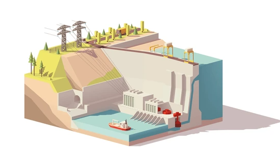
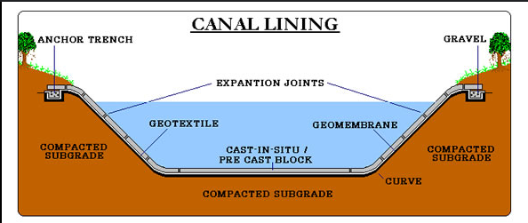

-min.png)
Virtual Reality is transforming the landscape of education, especially in the field of structural civil engineering. For years, students have learned about concepts like dam and canal cross sections through textbooks, lectures, and physical models.
But now, thanks to VR, they can engage in a fully immersive learning experience that takes them inside the structures they are studying.
This blog explores how VR is transforming the teaching of dam and canal cross sections in structural civil engineering, offering unique opportunities for students to learn, interact, and explore like never before.
The Rise of Virtual Reality in Structural Engineering
VR is no longer a futuristic concept. It has found its way into several industries, including education, where it is offering new ways to teach complex subjects. In civil engineering, VR enables students to walk through, interact with, and manipulate engineering structures without the constraints of physical limitations.
Whether it’s simulating the forces acting on a dam or examining the intricate design of a canal, VR provides a detailed and dynamic way to experience these structures.
For colleges and universities, implementing VR for teaching civil engineering concepts can enhance student engagement, improve understanding, and prepare students for real-world applications.

By integrating VR into their curricula, educational institutions can provide students with an immersive, interactive experience that traditional methods simply cannot offer.
Understanding Dam and Canal Cross Sections Through Virtual Reality
Dam Cross Sections: A Closer Look
A dam cross section is a vertical slice of a dam that shows the internal structure and the forces acting on it. Traditional learning methods often involve diagrams, static images, or physical models. However, these methods don’t provide students with an accurate sense of scale, material behavior, or how forces such as water pressure affect the dam’s stability.

With VR, students can view and explore dam cross sections in a 3D environment. They can zoom in to examine different materials used in construction, analyze how water pressure impacts various parts of the dam, and even simulate scenarios like overflow or seismic activity. These interactive simulations give students a deep understanding of dam design and functionality, far beyond what textbooks can provide.
Benefits of VR Dam Cross-Section Simulations:
● Immersive Learning: Students can interact with 3D models of dams, exploring them from different angles.
● Real-World Applications: Students experience how different forces and environmental factors affect a dam’s structure.
● Enhanced Visualization: Students gain a better understanding of how different materials and components work together in a dam.
Canal Cross Sections: Understanding Water Flow and Engineering Design
Canal cross sections are equally important in civil engineering, especially in the context of water management, irrigation, and transportation. These cross sections show the design of the canal, including the slope, width, depth, and the path the water follows.

In traditional settings, students might observe cross-section drawings or visit real canals to study them. However, these methods limit the ability to study the full scope of a canal’s design. With VR, students can step into the design itself, observing water flow, canal stability, and erosion in real time. They can adjust the water level, examine different materials, and simulate real-world conditions, all within the virtual environment.
Benefits of VR Canal Cross-Section Simulations:
● Interactive Exploration: Students can manipulate the flow of water and examine how changes in the canal’s design impact performance.
● Problem-Solving: Students can experiment with solutions for canal erosion or flooding, experiencing the results firsthand.
● Deeper Understanding: Students can view and interact with canal components that are often difficult to grasp from 2D drawings.
How VR Enhances Teaching in Structural Civil Engineering
Engaging Engineering Students with Interactive Simulations
Teaching civil engineering with virtual reality enables students to interact with engineering models in ways that static lectures and textbooks cannot achieve. VR offers an immersive experience that can hold students’ attention, improve their understanding, and make learning more enjoyable. By putting students into a virtual world where they can see and interact with dams, canals, and other civil engineering structures, VR enhances the learning process by providing a hands-on, experiential approach.
Why VR Works in Civil Engineering Education:
● Active Learning: Students are not just passive recipients of information—they are actively involved in the learning process.
● Instant Feedback: Students can see the effects of their actions in real-time, improving their understanding of complex concepts.
● Collaboration: Virtual environments can allow students to collaborate on projects and work together in ways that would not be possible in traditional classroom settings.
Bridging the Gap Between Theory and Practice
One of the biggest challenges in engineering education is bridging the gap between theoretical knowledge and practical application. Traditional methods often leave students with a solid understanding of theory but without the experience to apply it in real-world scenarios. VR provides an opportunity to bridge this gap by placing students in real-world simulations where they can apply their knowledge and see the results of their decisions.
For example, students studying dam design can simulate a flood and observe how different design modifications can impact the dam’s ability to withstand the pressure. Similarly, canal design students can explore how changes in water flow or material choices might affect the overall efficiency of the canal.
 Get the App from Meta Store: Download Now
Get the App from Meta Store: Download Now
Advantages of VR in Bridging Theory and Practice:
● Simulated Real-World Scenarios: Students can apply theoretical knowledge in a controlled, virtual environment.
● Hands-On Learning: Instead of just learning about dam and canal designs, students can actively manipulate them.
● Safe Exploration: Students can experiment with dangerous or costly scenarios without risk.
Implementing VR in Structural Civil Engineering Education
How Colleges and Universities Can Integrate VR
Integrating VR into structural civil engineering courses requires careful planning and investment. However, the benefits far outweigh the costs, especially when it comes to providing students with an enriched learning experience. Here are some steps institutions can take to incorporate VR into their curricula:
1. Invest in VR Equipment: Schools need VR headsets, compatible computers, and software designed for civil engineering applications.
2. Develop or License VR Simulations: Institutions can either develop their own VR simulations or license existing ones tailored to civil engineering topics such as dam and canal cross sections.
3. Train Faculty and Staff: Teachers and faculty need to be trained on how to use VR technology in the classroom effectively.
4. Create a Dedicated VR Lab: A VR lab equipped with the necessary tools and space for students to explore simulations can be an invaluable resource.
5. Evaluate and Update Curriculum: Colleges should assess how VR can be integrated into their existing curriculum, updating it to include immersive learning experiences.
Overcoming Challenges in VR Implementation
While the benefits of VR in structural civil engineering education are clear, there are challenges to its implementation. These challenges include costs, faculty training, and the need for appropriate infrastructure. However, with the right planning, these hurdles can be overcome. Many educational institutions are already successfully incorporating VR into their engineering programs, proving that it is a viable and worthwhile investment.
Conclusion
Virtual Reality is reshaping the future of structural engineering education by providing students with a deeper, more interactive learning experience. Teaching dam and canal cross sections through VR allows students to understand complex concepts more thoroughly, applying their knowledge in virtual environments where they can experiment and learn by doing.
For colleges and universities looking to stay at the forefront of engineering education, integrating VR into their curricula is a powerful way to engage students, enhance learning, and prepare them for the challenges of the real world.
By embracing vr in structural civil engineering, educational institutions can offer a cutting-edge, immersive learning experience that sets students up for success in their future careers.
The potential for vr in engineering education is vast, and the sooner institutions adopt this technology, the better prepared their students will be for the challenges of the modern engineering world.